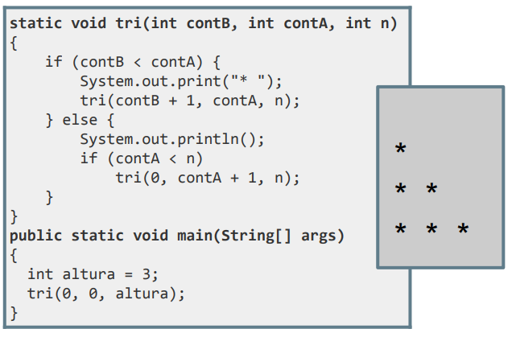
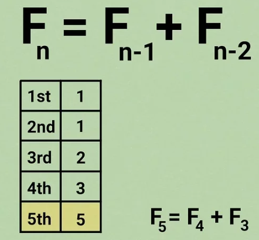
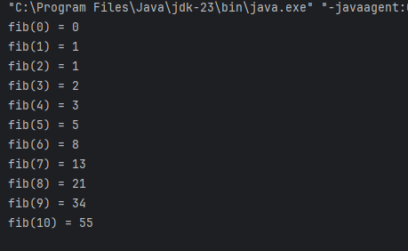
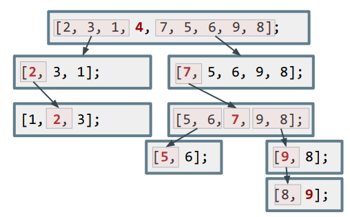

A estas alturas estará pensando... ¿pero esto no es como usar bucles?
La realidad es que prácticamente todos los programas que se resuelven mediante bucles pueden resolverse también con recursividad de forma más eficiente, pero la complejidad de la lógica a implementar de forma recursiva no siempre lo permite.
Por ejemplo, crear un triángulo:

public static void tri(int contB, int contA, int n){
if (contB < contA) {
System.out.print("* ");
tri(contB + 1, contA, n);
} else {
System.out.println();
if (contA < n)
tri(0, contA + 1, n);
}
}
public static void main(String[] args){
int altura = 3;
tri(0, 0, altura);
}Otro ejemplo típico cuando se cuenta recursividad es la llamada serie de Fibonacci:

Aplicando los mismos pasos del factorial, necesitaremos una condición para que la función tenga una salida recursiva y otra no recursiva. En nuestro caso, sabemos que cuando N sea < 2 (para 0 y 1) devolveremos siempre N.
public static int fibonacci(int n){
if (n<2) {
return n;
} else {
return fibonacci(n-1) + fibonacci(n-2);
}
}Si quisiéramos imprimir los 10 primeros números de la serie de Fibonacci, implementaríamos el siguiente programa principal que llama a la función anterior:
public static void main(String[] args){
for (int i = 0; i <= 10; i++) {
System.out.println("fib(" + i + ") = " + fibonacci(i));
}
}
El algoritmo QuickSort...
Tal y como vimos en el tema 3, Quicksort es uno de los algoritmos de ordenación más rápidos que existe haciendo uso de la estrategia divide y vencerás.
Por recordar cómo se comportaba...
int nums[] = {4, 7, 5, 6, 2, 3, 1, 9, 8};Teniendo en cuenta el vector anterior, debíamos elegir como pivote el elemento de más a la izquierda (4). A partir de ahí, colocábamos a su izquierda los menores, y a su derecha los mayores. Repetimos el mismo proceso con las 2 sublistas de la izquierda y de la derecha; y así sucesivamente sobre cada una de las sublistas, mientras las sublistas tengan más de un elemento:

Como ves, el problema se va haciendo cada vez más "pequeño", y ahora conociendo la recursividad, es posible sospechar que la forma de implementarlo sea usando una función recursiva... Y de hecho, así es.